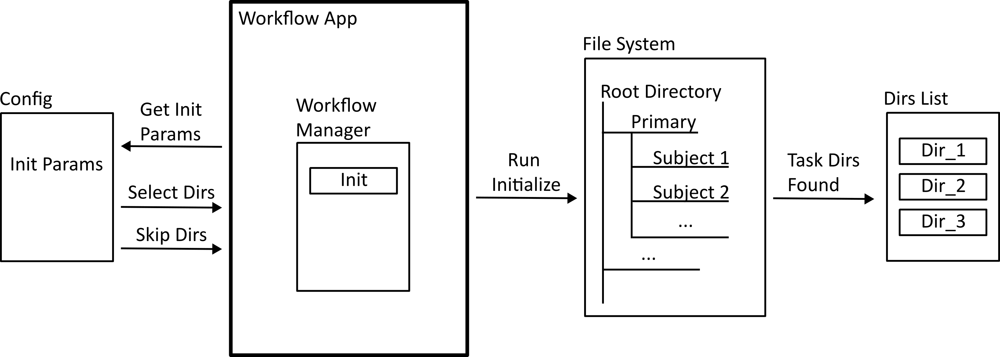
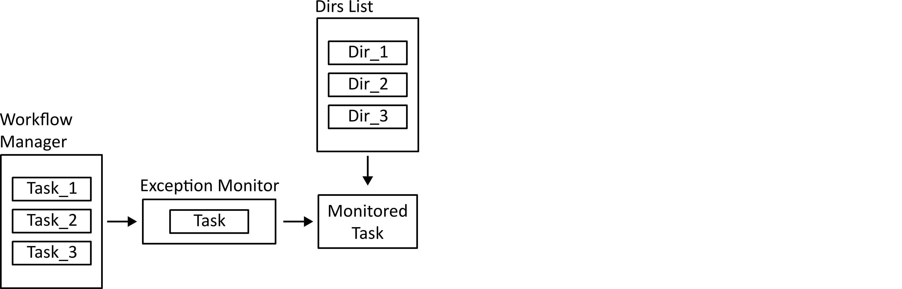

Workflow App¶
Setup¶
To use the workflow app, first install the Lung Modelling package. See Installation for instructions.
Once the package is installed, initialize a user-editable configuration by running:
python -m lung_modelling initialize_user_config=True
This should create a folder named user_config in your working directory. The user config folder contains .yaml files will all the editable configuration parameters for the existing workflow tasks. See the Hydra documentation for detailed information on how this works.
Running Example Workflow¶
To test the package on example data, first download the example data file and unzip it:
tar -xf covid_lung_segmentation.zip
Run the batch workflow with the example settings:
python -m lung_modelling user_config=example_workflow
This will bring up a file select dialog. Select the folder covid_lung_lobe_segmentation. The example workflow will run, producing a shapeworks project in the pooled_derivative -> optimize_meshes_sw folder.
Dataset Configuration¶
To run the workflow app on your own dataset, your dataset must be structured in a specific way (following the SPARC data structure). It must also contain a file called dataset_config.json, explained below. An example of the structure is as follows:
dataset_name/
|--- dataset_config.json
|--- primary
| |--- subject_directory_1
| |--- subject_data.nii
|--- derivative
| |--- subject_directory_1
| |--- raw_mesh
| |--- lobe_1.stl
A top level directory with the dataset name has sub directories primary and derivative. Initial data is stored in the primary directory, separated into individual subject directories. Generated data is placed in the derivative directory, with a structure mirroring that of the primary. Any number of sub directories can exist before the data files.
The dataset structure along with information about the files contained in the dataset must be specified in a file named dataset_config.json. An example of this is shown below:
{
"primary_directory": "primary",
"derivative_directory": "derivative",
"pooled_primary_directory": "pooled_primary",
"pooled_derivative_directory": "pooled_derivative",
"directory_index_glob": "directory_index*.csv",
"data_folder_depth": 2,
"subject_id_folder_depth": 2,
"lung_image_glob": "*.nii",
"lobe_mapping": {"rul": 3, "rml": 4, "rll": 5, "lul": 1,
"lll": 2}
}
In the above example, the first 6 items are generic and the final 3 are dataset specific, which can be added as necessary and accessed by the workflow tasks.
primary_directory refers to the name of the directory holding the primary data in the dataset.
derivative_directory refers to the name of the directory in which to place generated data.
pooled_primary_directory refers to the name of the directory holding primary data files which contain data on two or more subjects from the dataset (e.g., a subject demographic data dictionary)
pooled_derivative_directory refers to the name of the directory in which to place data generated from two or more subjects combined into a single output file.
directory_index_glob refers to a glob used to find a pre-built directory index of the dataset if it exists.
data_folder_depth is the number of folders between the top level dataset folder and the data files. (e.g., the dataset structure may be: primary -> subject_id -> study_phase -> imaging_mode, with data residing in the imaging mode folder, a depth of 4)
subject_id_folder_depth is the number of folders between the top level dataset folder and a folder with a name that can be used as a unique identifier for a single subject
lung_image_glob refers to a glob used to find lung image data files
lobe_mapping specifies the value used to indicate each lung lobe in the lung lobe image files.
Workflow Configuration¶
A workflow is specified using a workflow configuration file in yaml format. This file is selected when running the run_workflow app by placing it in the user_config directory and setting the user_config parameter from the command line (see run example workflow). This file specifies both the tasks which will make up the workflow and all the settings or parameters that each task requires.
There are three main sections to the workflow configuration file: The general settings, the tasks list, and the run_tasks list.
Below is an example of a workflow configuration file.
dataset_root: null
log_level: "INFO"
use_multiprocessing: False
tasks:
initialize:
dataset_config_filename: "dataset_config.json"
use_directory_index: False
skip_dirs: [ ]
select_dirs: [ ]
extract_whole_lungs_sw:
task: "ExtractWholeLungsSW"
results_directory: "extract_whole_lungs_sw"
output_filenames: { left_lung: [ "lul", "lll" ], right_lung: [ "rul", "rml", "rll" ] }
params: { maximumRMSError: 0.009999999776482582, numberOfIterations: 30 }
create_meshes_sw:
task: "CreateMeshesSW"
source_directory: "extract_whole_lungs_sw"
results_directory: "create_meshes_whole_lungs_sw"
image_glob: "*.nii"
params: {
pad: True,
step_size: 1,
decimate: True,
decimate_target_faces: 100000,
subdivide_passes: 0,
volume_preservation: True,
remesh: True,
remesh_target_points: 40000,
adaptivity: 0,
smooth: True,
smooth_iterations: 10,
relaxation: 1,
fill_holes: True,
hole_size: 100,
remove_shared_faces: True,
isolate_mesh: True }
reference_selection_mesh_sw:
task: "ReferenceSelectionMeshSW"
source_directory: "create_meshes_whole_lungs_sw"
results_directory: "reference_selection_mesh_whole_lungs_sw"
mesh_transform_sw:
task: "MeshTransformSW"
source_directory_initialize: "reference_selection_mesh_whole_lungs_sw"
source_directories: ["create_meshes_whole_lungs_sw"]
results_directory: "mesh_transform_sw"
params: { iterations: 100 }
mesh_landmarks_lungs:
task: "MeshLandmarksCoarse"
source_directory: "create_meshes_whole_lungs_sw"
results_directory: "mesh_landmarks_coarse_lungs"
params: { }
optimize_meshes_sw:
task: "OptimizeMeshesSW"
source_directory_transform: "mesh_transform_sw"
source_directories_mesh: [ "create_meshes_whole_lungs_sw" ]
source_directories_original: [ "extract_whole_lungs_sw"]
source_directories_landmarks: [ "mesh_landmarks_coarse_lungs" ]
image_globs: [ "*.nii"]
results_directory: "optimize_meshes_sw"
params: {
checkpointing_interval: 200,
keep_checkpoints: 0,
iterations_per_split: 2000,
optimization_iterations: 2000,
starting_regularization: 2000,
ending_regularization: 100,
relative_weighting: 4,
initial_relative_weighting: 0.03,
save_init_splits: 0,
verbosity: 0,
use_normals: 1,
normals_strength: 10.0,
procrustes: 0,
procrustes_scaling: 1,
procrustes_rotation_translation: 1,
number_of_particles: [ 128, 128],
use_geodesic_distance: 0,
use_landmarks: 1
}
logging:
run_tasks: [ "smooth_whole_lungs_sw", "create_meshes_sw", "reference_selection_mesh_sw", "mesh_transform_sw",
"mesh_landmarks_lungs", "optimize_meshes_sw" ]
datset_root: Root directory for the dataset on which to run the workflow. If set to null a directory select dialog will be created. This can also be overwritten from the command line (e.g., user_config.dataset_root=”C:/path/to/dataset”).
log_level: Log level for loguru logs
use_multiprocessing: Flag to turn on or off the use of multiprocessing to run EachItemTask tasks in parallel
tasks: A list of yaml dictionaries specifying the configuration for tasks to be included in the workflow. The key of each dictionary entry can be any string, and is used to refer to the task config in the run_tasks list. The “task” element must refer to the class name of a class implementing EachItemTask or AllItemsTask. The remaining elements refer to the input parameters of each task. (The sub dictionary params can be used to group parameters that effect the core functioning of the task, but this is not enforced).
run_tasks: A list of tasks specified by the task labels in the tasks dictionary. This specifies which tasks will be run and in which order. (initialize is always run first, and logging is always run last in the workflow. They do not need the “task” name element.
Workflow Run Logs¶
A completed workflow run is saved in the dataset_root->logging directory. This includes the workflow configuration file and a list of all installed python packages with version numbers.
The lung_modelling package uses setuptools-scm to provide up to date version numbers. If the package is installed from github or run unedited from a cloned github repository, the version number will allow identification of which commit was used during the logged run.
App Dataflow Diagrams¶
The following diagrams illustrate the main functions of the workflow app and workflow manager.
Initialization¶
When the workflow app is run, a workflow manager class is instantiated, and the initialization task is run. This takes information from the workflow configuration file to build a list of directories that the tasks will make use of.
Task Registration¶
The tasks specified in the workflow configuration file are found in the task library, and instantiated using the specified parameters.

Running Parallel Tasks¶
If multiprocessing is enabled, tasks which only need access to one directory (those implementing the each_item_task interface) can be dispatched to parallel processes. The work methods of these tasks are wrapped in an exception monitor decorator so that any exceptions can be reported to the parent process.

Running Non-Parallel Tasks¶
Tasks which need access to all directories (all_items_tasks) have their work functions run. These are also done in a try/catch block so errors can be logged.
